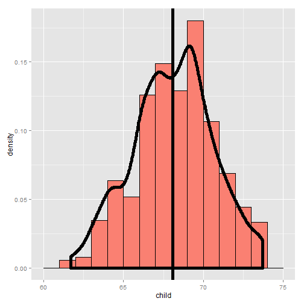
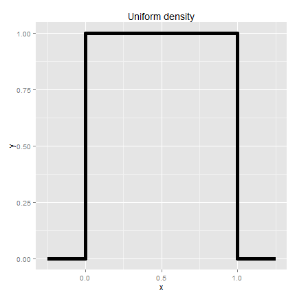
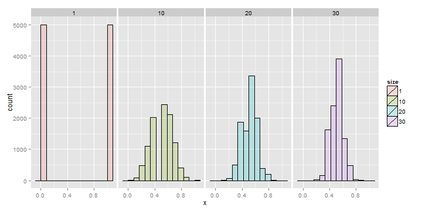

- Expected values are useful cor characterizing a distribution
- The mean is a characterization of its center
- The variance and standard deviation are characterizations of how spread out it is
- Our sample expected values (the sample mean and variance) will estimate the population versions
Expected values
Statistical Inference
Brian Caffo, Jeff Leek, Roger Peng
Johns Hopkins Bloomberg School of Public Health
Expected values
The population mean
- The expected value or mean of a random variable is the center of its distribution
- For discrete random variable \(X\) with PMF \(p(x)\), it is defined as follows \[ E[X] = \sum_x xp(x). \] where the sum is taken over the possible values of \(x\)
- \(E[X]\) represents the center of mass of a collection of locations and weights, \(\{x, p(x)\}\)
The sample mean
- The sample mean estimates this population mean
- The center of mass of the data is the empirical mean \[ \bar X = \sum_{i=1}^n x_i p(x_i) \] where \(p(x_i) = 1/n\)
Example
Find the center of mass of the bars

Using manipulate
library(manipulate)
myHist <- function(mu){
g <- ggplot(galton, aes(x = child))
g <- g + geom_histogram(fill = "salmon",
binwidth=1, aes(y = ..density..), colour = "black")
g <- g + geom_density(size = 2)
g <- g + geom_vline(xintercept = mu, size = 2)
mse <- round(mean((galton$child - mu)^2), 3)
g <- g + labs(title = paste('mu = ', mu, ' MSE = ', mse))
g
}
manipulate(myHist(mu), mu = slider(62, 74, step = 0.5))
The center of mass is the empirical mean

Example of a population mean
- Suppose a coin is flipped and \(X\) is declared \(0\) or \(1\) corresponding to a head or a tail, respectively
- What is the expected value of \(X\)? \[ E[X] = .5 \times 0 + .5 \times 1 = .5 \]
- Note, if thought about geometrically, this answer is obvious; if two equal weights are spaced at 0 and 1, the center of mass will be \(.5\)

What about a biased coin?
- Suppose that a random variable, \(X\), is so that \(P(X=1) = p\) and \(P(X=0) = (1 - p)\)
- (This is a biased coin when \(p\neq 0.5\))
- What is its expected value? \[ E[X] = 0 * (1 - p) + 1 * p = p \]
Example
- Suppose that a die is rolled and \(X\) is the number face up
- What is the expected value of \(X\)? \[ E[X] = 1 \times \frac{1}{6} + 2 \times \frac{1}{6} + 3 \times \frac{1}{6} + 4 \times \frac{1}{6} + 5 \times \frac{1}{6} + 6 \times \frac{1}{6} = 3.5 \]
- Again, the geometric argument makes this answer obvious without calculation.

Continuous random variables
- For a continuous random variable, \(X\), with density, \(f\), the expected value is again exactly the center of mass of the density
Example
- Consider a density where \(f(x) = 1\) for \(x\) between zero and one
- (Is this a valid density?)
- Suppose that \(X\) follows this density; what is its expected value?

Facts about expected values
- Recall that expected values are properties of distributions
- Note the average of random variables is itself a random variable and its associated distribution has an expected value
- The center of this distribution is the same as that of the original distribution
- Therefore, the expected value of the sample mean is the population mean that it's trying to estimate
- When the expected value of an estimator is what its trying to estimate, we say that the estimator is unbiased
- Let's try a simulation experiment
Simulation experiment
Simulating normals with mean 0 and variance 1 versus averages of 10 normals from the same population

Averages of x die rolls

Averages of x coin flips

Sumarizing what we know
- Expected values are properties of distributions
- The population mean is the center of mass of population
- The sample mean is the center of mass of the observed data
- The sample mean is an estimate of the population mean
- The sample mean is unbiased
- The population mean of its distribution is the mean that it's trying to estimate
- The more data that goes into the sample mean, the more concentrated its density / mass function is around the population mean